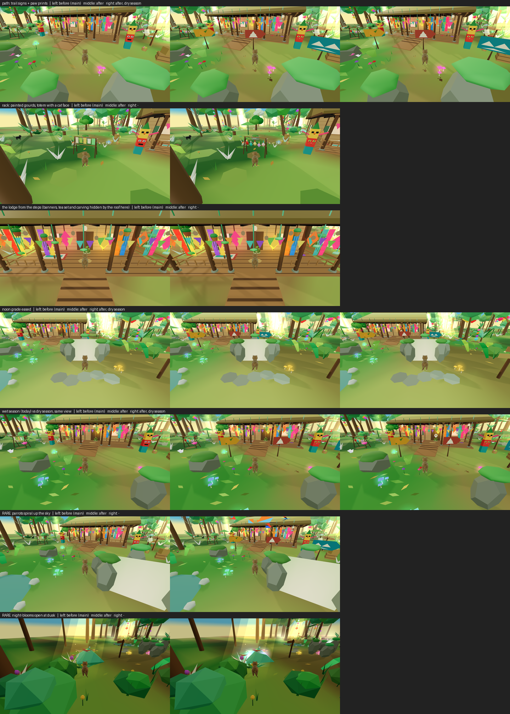

Left: before (main). Middle: after (wet season, which today's date gives). Right, on three rows: the same view in the dry season (a golden, farther haze; less mist and cloth colour). Rows: hand-painted trail signs and paw prints on the path; the drying rack hung with painted gourds and a totem with a cat's face; the lodge from the steps; noon (the green-gold grade eased); the wet and dry seasons; the rare parrots spiralling up the sky; the rare night-blooms opening at dusk. Honest notes: the day-time seasonal difference is gentle (haze reach, mist, cloth tint, river sparkles; a still frame cannot show the sparkles or petal count); the tea set, carving, hammock book and river-bank scene are small and mostly seen on closer approach (the veranda roof also hides the deck in the play camera). The monkey chorus is sound only.
